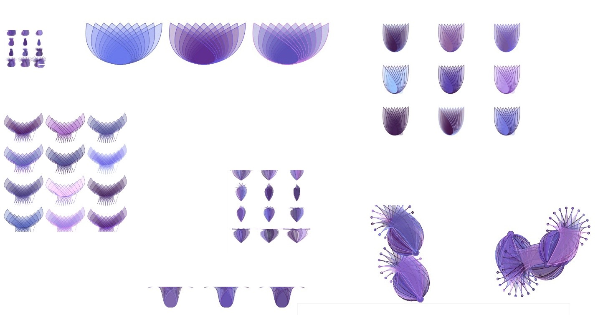

Creating a Javascript Dress
The javascript is made of a horizontal repeating surfacepattern designed in javascript, exported as svg, saved as a .jpg and uploaded in de online shop of passion-designs. After 4 weeks a got my design back as a fabric and sowed my own javascript dress.
|  | |

| |